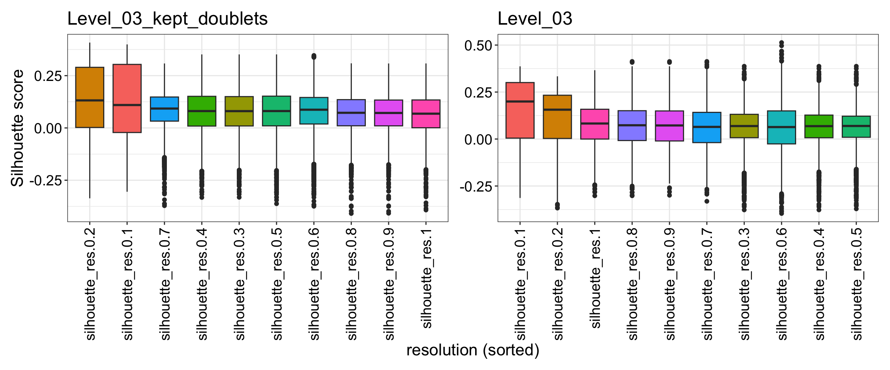
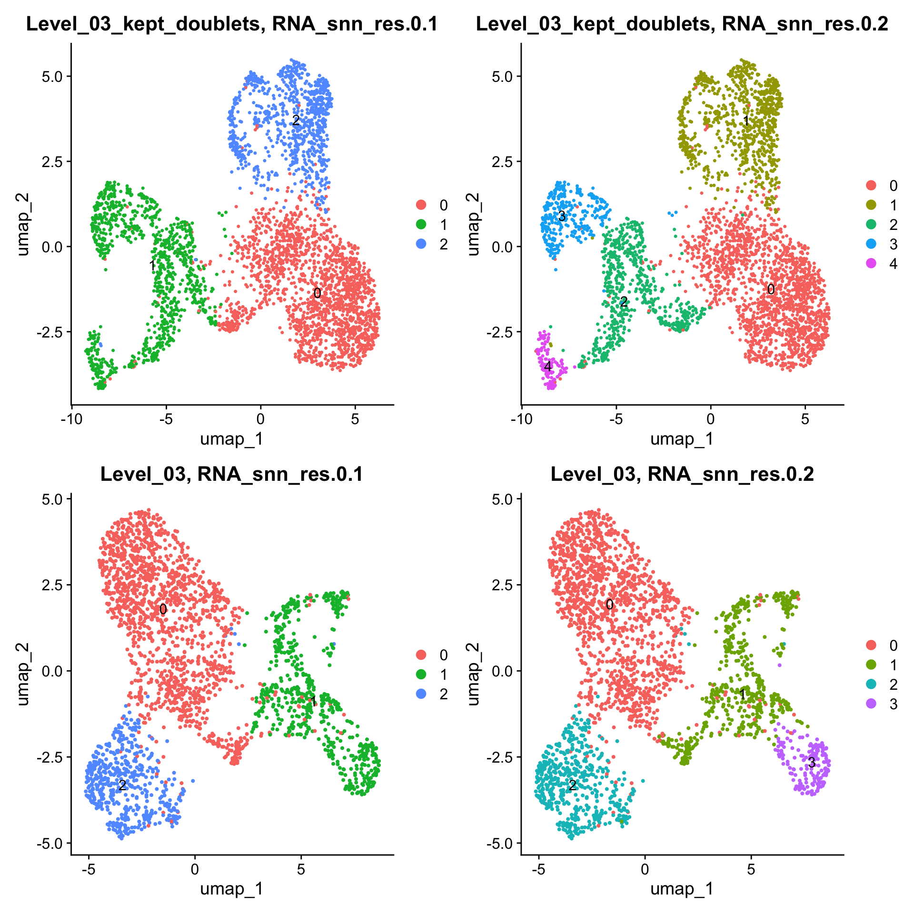
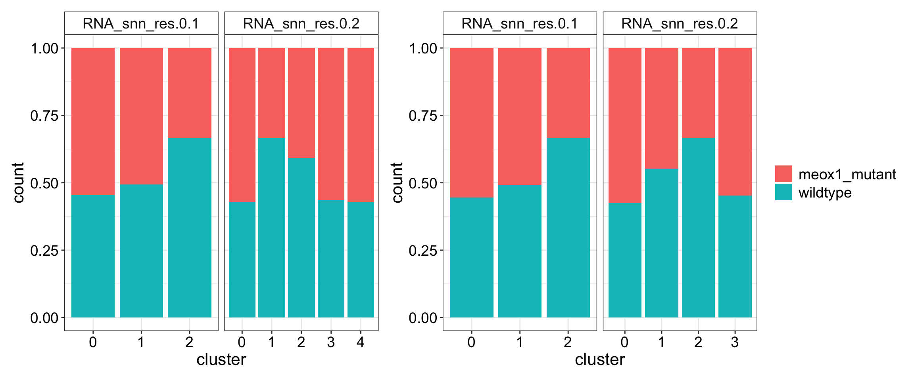
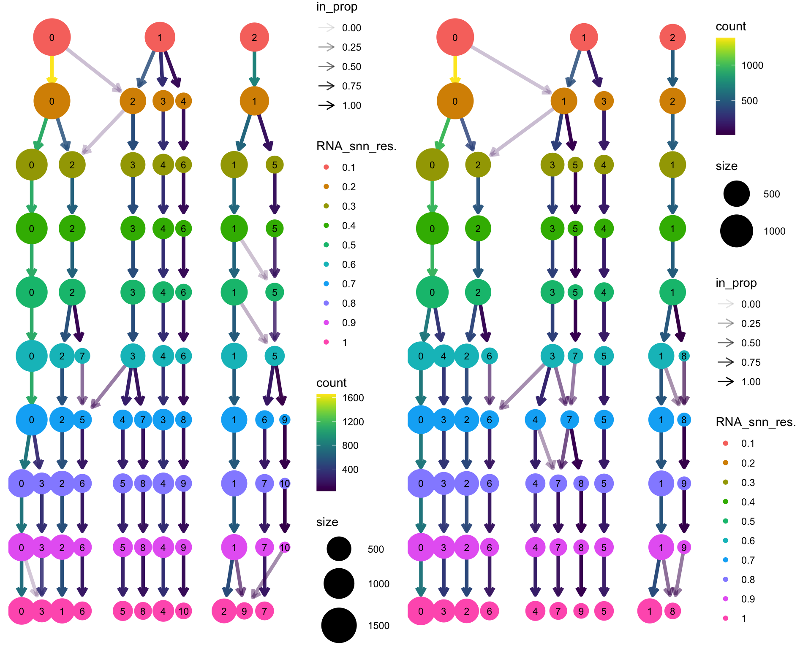
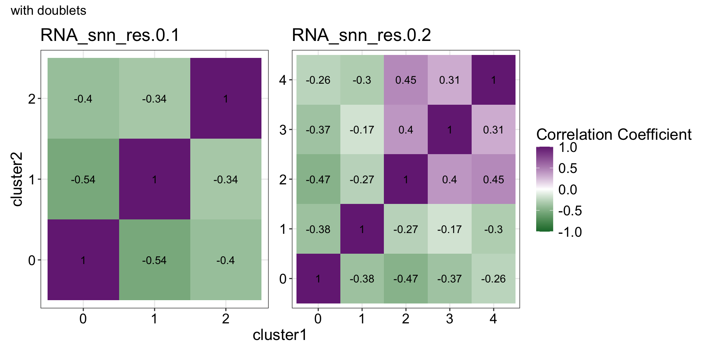
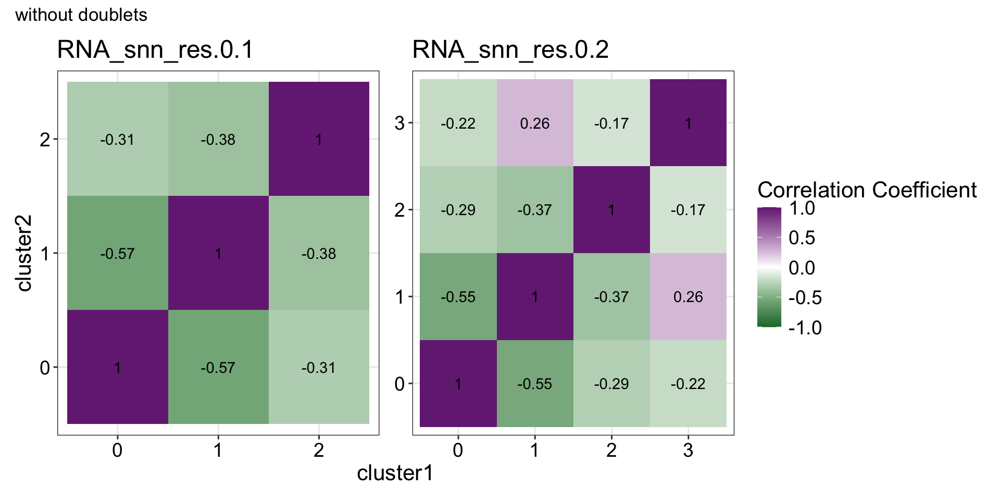
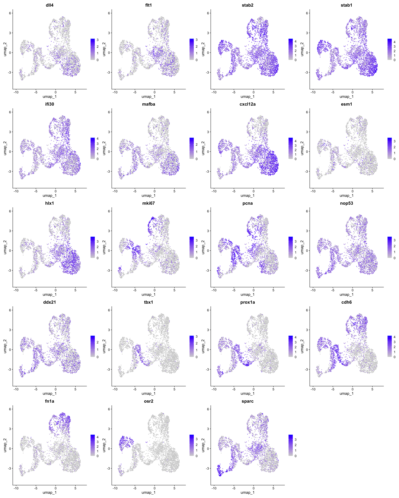
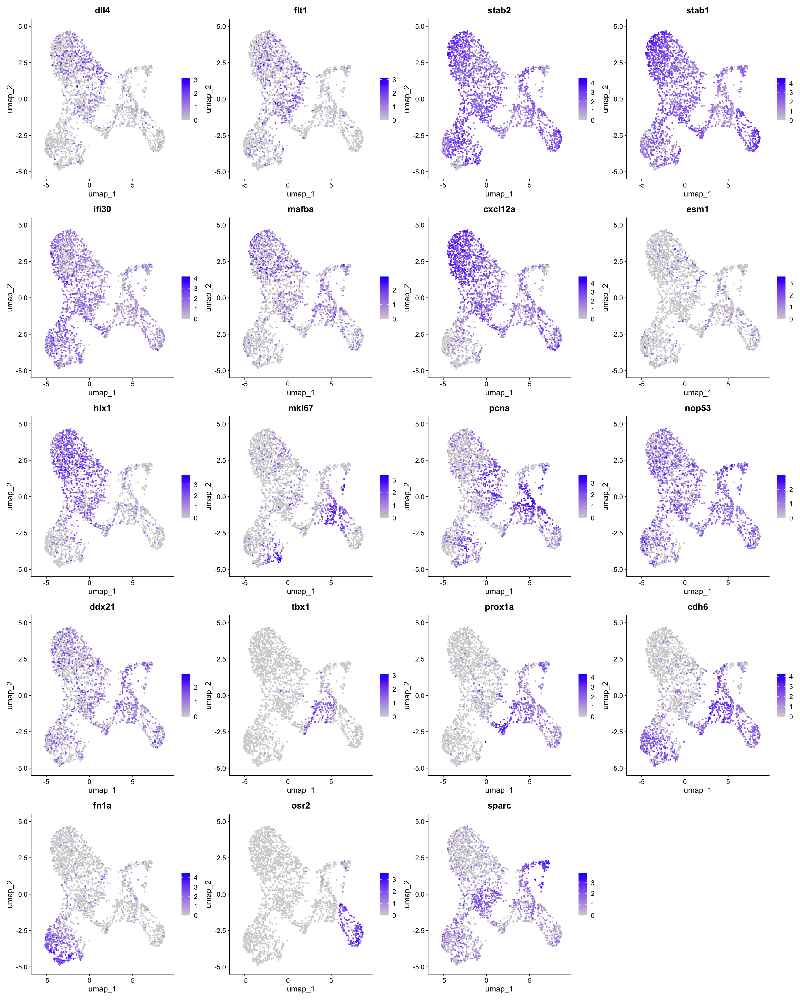
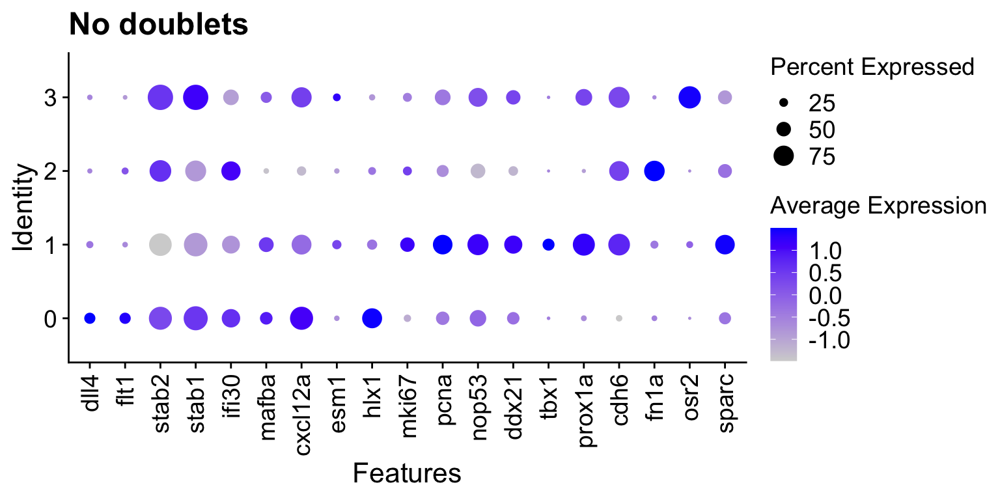
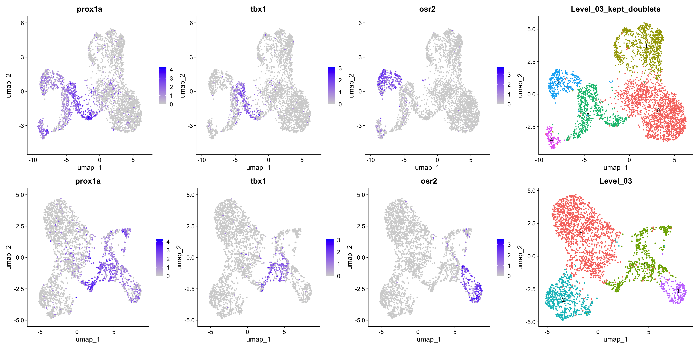

Last updated: 2026-02-02
Checks: 7 0
Knit directory: yap1_meox1_paper/
This reproducible R Markdown analysis was created with workflowr (version 1.7.1). The Checks tab describes the reproducibility checks that were applied when the results were created. The Past versions tab lists the development history.
Great! Since the R Markdown file has been committed to the Git repository, you know the exact version of the code that produced these results.
Great job! The global environment was empty. Objects defined in the global environment can affect the analysis in your R Markdown file in unknown ways. For reproduciblity it’s best to always run the code in an empty environment.
The command set.seed(20260119) was run prior to running
the code in the R Markdown file. Setting a seed ensures that any results
that rely on randomness, e.g. subsampling or permutations, are
reproducible.
Great job! Recording the operating system, R version, and package versions is critical for reproducibility.
Nice! There were no cached chunks for this analysis, so you can be confident that you successfully produced the results during this run.
Great job! Using relative paths to the files within your workflowr project makes it easier to run your code on other machines.
Great! You are using Git for version control. Tracking code development and connecting the code version to the results is critical for reproducibility.
The results in this page were generated with repository version 043a857. See the Past versions tab to see a history of the changes made to the R Markdown and HTML files.
Note that you need to be careful to ensure that all relevant files for
the analysis have been committed to Git prior to generating the results
(you can use wflow_publish or
wflow_git_commit). workflowr only checks the R Markdown
file, but you know if there are other scripts or data files that it
depends on. Below is the status of the Git repository when the results
were generated:
Ignored files:
Ignored: .DS_Store
Ignored: .Rhistory
Ignored: .Rproj.user/
Ignored: code/.DS_Store
Ignored: code/analysis/.DS_Store
Ignored: code/pre_processing/
Ignored: data/.DS_Store
Ignored: data/genesets/
Ignored: data/input/
Ignored: output/.DS_Store
Ignored: output/analysis/
Ignored: output/data/
Ignored: renv/library/
Ignored: renv/staging/
Note that any generated files, e.g. HTML, png, CSS, etc., are not included in this status report because it is ok for generated content to have uncommitted changes.
These are the previous versions of the repository in which changes were
made to the R Markdown
(analysis/pre_processing_D10051_meox1_dataset_makeObject_Level03_stringent_annotation.Rmd)
and HTML
(docs/pre_processing_D10051_meox1_dataset_makeObject_Level03_stringent_annotation.html)
files. If you’ve configured a remote Git repository (see
?wflow_git_remote), click on the hyperlinks in the table
below to view the files as they were in that past version.
| File | Version | Author | Date | Message |
|---|---|---|---|---|
| Rmd | 043a857 | Michelle Meier | 2026-02-02 | wflow_publish("analysis/pre_processing_D10051_meox1_dataset_makeObject_Level03_stringent_annotation.Rmd") |
Annotate Level 03 object for meox1 dataset. Focus on Level 01 and Level 02 was to exclude any cells we’re not interested in, but now at Level 03 we’re more interested in LEC/VEC subpopulations.
### Set-up
Load libraries
suppressPackageStartupMessages({
library(tidyverse)
library(here)
library(Seurat)
library(scDblFinder)
library(ggpubr)
library(clustree)
library(patchwork)
library(scater)
library(scran)
library(qs2)
library(scGate)
library(bluster)
})Made here: ./pre_processing_D10025_yap1_dataset_makeObject_Level03_stringent.Rmd
input_paths <- c(file_name <- here('output/data/Datsets/D10051_meox1_dataset/D10051_meox1_dataset_Level_03_stringent_kept_doublets.qs2'),
here('output/data/Datsets/D10051_meox1_dataset/D10051_meox1_dataset_Level_03_stringent.qs2'))
list_objects <- lapply(input_paths, qs_read)
names(list_objects) <- gsub("\\.qs2", "", basename(input_paths))plot_sizing <- theme_bw()+ theme(axis.title = element_text(size = 16),
axis.text = element_text(size = 14, colour = "black"),
plot.title = element_text(size = 18),
legend.text = element_text(size = 14),
legend.title = element_blank())
plot_sizing_keeplegend <- theme_bw()+ theme(axis.title = element_text(size = 16),
axis.text = element_text(size = 14, colour = "black"),
plot.title = element_text(size = 18),
legend.text = element_text(size = 14),
legend.title = element_text(size = 16))
plot_sizing_seurat <- theme(axis.title = element_text(size = 16),
axis.text = element_text(size = 14, colour = "black"),
plot.title = element_text(size = 18),
legend.text = element_text(size = 14))
rotate_x <- theme(axis.text.x = element_text(angle = 90, vjust = 0.5, hjust=1))
strip_fix <- theme(strip.background = element_rect(fill = "white"),
strip.text = element_text(size = 14))This can be a very delicate process, and there’s not really a single data-driven method that everyone uses. For level 01, our main goal was to keep as many kdrl+ endothelial cell clusters as possible. On level 02, it was important to find a clustering solution that would best split the LEC/VEC from the rest of the endothelium.
Silhouette scores can be used to score quality of clustering. Not everyone thinks it is the most appropriate solution for single-cell though, particularly if there are multiple samples with potential batch effects involved.
Following this
The score ranges from -1 to +1:
Close to +1: Point is well-matched to its cluster and far from others means excellent clustering.
Around 0: Point is near cluster boundaries or clusters overlap.
Close to -1: Point is likely assigned to the wrong cluster means poor clustering.
#add silhouette score for all clustering solutions
run_silhouette_score <- function(seurat){
reduction_to_use <- seurat@reductions$pca@cell.embeddings #use PCA cell embeddings
list_all_res <- lapply(c(sprintf("RNA_snn_res.%0.1f", seq(0.1,0.9,0.1)), "RNA_snn_res.1"), function(res){
meta_to_use <- seurat@meta.data %>% pull(res)
silhouette <- approxSilhouette(reduction_to_use, meta_to_use) %>% as.data.frame() %>%
select(width)
colnames(silhouette) <- c(sprintf("silhouette_%s_width", res))
return(silhouette)
})
output_df <- Reduce(cbind, list_all_res) %>%
# pivot_wider(., values_from = "width", names_from = "resolution") %>%
rownames_to_column("Barcode")
new_meta <- seurat@meta.data %>%
mutate(., Barcode = rownames(seurat@meta.data))%>%
full_join(., output_df, by = "Barcode") %>%
column_to_rownames("Barcode")
seurat@meta.data <- new_meta
rm(new_meta, reduction_to_use, list_all_res, output_df); gc()
return(seurat)
}list_objects <- lapply(list_objects, run_silhouette_score)Make plots
run_silhouette_plots <- function(seurat){
seurat@meta.data %>%
select(., ends_with("width")) %>%
pivot_longer(., cols = everything(), names_to = "resolution", values_to = "silhouette_width") %>%
mutate(., resolution = gsub("_width" , "",gsub("RNA_snn_", "" ,resolution))) %>%
ggplot(., aes(x = reorder(resolution, -silhouette_width), y = silhouette_width, fill = resolution )) +
geom_boxplot() +
plot_sizing + rotate_x +
theme(legend.position = "none") +
ggtitle(seurat@misc$name) +
ylab("Silhouette score") + xlab("resolution (sorted)")
}plot_list <- lapply(list_objects, run_silhouette_plots)
wrap_plots(plot_list) +plot_layout(axis_titles = "collect")
Silhouette scores are quite similar, top hits are: 0.1 (max without doublet), 0.2 (max with doublet)
For now, that’s only 0.1 and 0.2
run_umaps <- function(seurat, resolutions){
plot_list <- lapply(resolutions, function(res){
DimPlot(seurat, group.by = res, shuffle = T, label = T) +
ggtitle(sprintf("%s, %s", seurat@misc$name, res))
})
}plot_list <- lapply(list_objects, function(seurat) run_umaps(seurat, resolutions = c("RNA_snn_res.0.1","RNA_snn_res.0.2")))
wrap_plots(unlist(plot_list, recursive = F), ncol = 2)
Make composition barcodes for this resolution
plot_list <- lapply(list_objects, function(seurat){
seurat@meta.data %>%
select(., Genotype, c("RNA_snn_res.0.1","RNA_snn_res.0.2")) %>%
pivot_longer(., cols = starts_with("RNA"), names_to = "resolution", values_to = "cluster") %>%
group_by(resolution, cluster, Genotype) %>%
summarise(., count = n()) %>%
ggplot(., aes(x = cluster, y = count, fill=Genotype))+
geom_bar(position = "fill", stat = "identity") +
plot_sizing +
facet_wrap(~resolution, scales = "free_x") + strip_fix
})
wrap_plots(plot_list, ncol = 2) + plot_layout(guides = "collect")
plot_list <- lapply(list_objects, function(S) clustree(x = S, prefix = 'RNA_snn_res.'))
wrap_plots(plot_list) 
Check transcriptional similarities between clusters using correlation.
run_cluster_correlation <- function(seurat,
resolutions = c(sprintf("RNA_snn_res.%0.1f", seq(0.1,0.9,0.1)), "RNA_snn_res.1")){
Expression_assay <- GetAssayData(seurat, layer = "scale.data", assay = "RNA")
all_res <- lapply(resolutions, function(res){
clusters <- seurat@meta.data %>%
pull(res) %>% unique()
corr_mat <- pval_mat <- matrix(data = NA, nrow = length(clusters), ncol = length(clusters))
colnames(corr_mat) <- rownames(corr_mat) <- colnames(pval_mat) <- rownames(pval_mat) <- clusters
#Populate correlation matrix
for (cluster1 in clusters){
for (cluster2 in clusters){
#get barcodes
barcodes1 <- seurat@meta.data %>%
rownames_to_column("Barcode") %>%
dplyr::rename(chosen_res=res) %>%
filter(., chosen_res == cluster1) %>% pull(Barcode)
barcodes2 <- seurat@meta.data %>%
rownames_to_column("Barcode") %>%
dplyr::rename(chosen_res=res) %>%
filter(., chosen_res == cluster2) %>% pull(Barcode)
#filter data sets
expr1 <- Expression_assay[, colnames(Expression_assay) %in% barcodes1] %>% as.data.frame() %>%
apply(., 1, mean)
expr2 <- Expression_assay[, colnames(Expression_assay) %in% barcodes2] %>% as.data.frame() %>%
apply(., 1, mean)
#calculate correlation
cor_res <- cor.test(expr1, expr2, method = 'spearman')
corr_mat[cluster1, cluster2] <- cor_res$estimate
pval_mat[cluster1, cluster2] <- cor_res$p.value
}
}
out_list <- list(corr =corr_mat, pval=pval_mat)
return(out_list)
})
names(all_res) <- resolutions
return(all_res)
}Lets only run for those with high silhouette scores
list_in <- lapply(list_objects, function(seurat) run_cluster_correlation(seurat = seurat,
resolutions = c("RNA_snn_res.0.1","RNA_snn_res.0.2")))Warning: Using an external vector in selections was deprecated in tidyselect 1.1.0.
ℹ Please use `all_of()` or `any_of()` instead.
# Was:
data %>% select(res)
# Now:
data %>% select(all_of(res))
See <https://tidyselect.r-lib.org/reference/faq-external-vector.html>.
This warning is displayed once every 8 hours.
Call `lifecycle::last_lifecycle_warnings()` to see where this warning was
generated.Make plots
run_correlation_plots <- function(list_in){
plot_list <- lapply(1:length(list_in), function(index){
temp_list <- list_in[[index]]
#get correlation ready
plot_df_corr <- temp_list$corr %>% as.data.frame() %>%
rownames_to_column("cluster1") %>%
pivot_longer(!cluster1, names_to = "cluster2", values_to = "Correlation") %>%
mutate(., cluster1= factor(cluster1, levels = as.character(seq(0,100,1))), #overshoot
cluster2= factor(cluster2, levels = as.character(seq(0,100,1))))
#get pvals ready
plot_df_pval <- temp_list$pval %>% as.data.frame() %>%
rownames_to_column("cluster1") %>%
pivot_longer(!cluster1, names_to = "cluster2", values_to = "p-value") %>%
mutate(., cluster1= factor(cluster1, levels = as.character(seq(0,100,1))), #overshoot
cluster2= factor(cluster2, levels = as.character(seq(0,100,1))))
plot_df <- full_join(plot_df_corr,plot_df_pval) %>%
mutate(., signs = ifelse(`p-value` < 0.05, round(Correlation, 2), "x"))
#make plot
heatmap.correlation <- ggplot(plot_df,
aes(x = cluster1, y = cluster2, fill = Correlation)) +
geom_tile() + theme_bw() +
scale_fill_gradient2(high = '#762A83', low = "#1B7837", mid = 'white', limits =c(-1,1)) +
geom_text(aes(label = signs)) +
labs(title = names(list_in)[index], fill = 'Correlation Coefficient') +
plot_sizing_keeplegend
return(heatmap.correlation)
}
)
return(plot_list)
}Should probably plot them separately. In this case, we don’t want the clusters to correlated with each other, as clusters that correlate are similar and therefore don’t need to be their own cluster.
First, with doublets.
plot_list <- run_correlation_plots(list_in = list_in$D10051_meox1_dataset_Level_03_stringent_kept_doublets)
wrap_plots(plot_list, ncol = 2) + plot_layout(guides="collect", axis_titles = "collect") +
plot_annotation(title = "with doublets") 
plot_list <- run_correlation_plots(list_in = list_in$D10051_meox1_dataset_Level_03_stringent)
wrap_plots(plot_list, ncol = 2) + plot_layout(guides="collect", axis_titles = "collect") +
plot_annotation(title = "without doublets") 
For with doublets, the correlation we see is for presumably the LEC, muLEC and sparc+ LECs. It makes sense for them to be correlated. Even more clean in the dataset without doublets, muLEC and LECs are expected to be correlated. I actually think that’s an interesting usecase - we know they are different cell types, so correlation of ~0/25-0.3 is reasonable between closely related celltypes and states!
level_03_dotplot <- c(
"dll4", #aec
"flt1", #aec
"stab2", #cvp
"stab1", #cvp
"ifi30",#cvp
"mafba",#cvp
"cxcl12a", #mapk signaling
"esm1", #migrating
"hlx1", #migrating
"mki67", #cycling
"pcna", #cycling
"nop53", #lec?
"ddx21", #lec?
"tbx1", #lec
"prox1a", #LEC
"cdh6", #LEC, hippo
"fn1a", #hippo
"osr2", #muLEC
"sparc"
)Make feature plots
run_feature_umap <- function(seurat, genes){
FeaturePlot(seurat, features = genes, ncol = 4)
}run_feature_umap(seurat = list_objects$D10051_meox1_dataset_Level_03_stringent_kept_doublets, genes = level_03_dotplot)
run_feature_umap(seurat = list_objects$D10051_meox1_dataset_Level_03_stringent, genes = level_03_dotplot)
Make dotplots.
run_dotplot <- function(seurat, genes, group){
DotPlot(seurat, features = genes, group.by = group) + ggtitle(sprintf("%s, %s",group, seurat@misc$name)) +plot_sizing_seurat + rotate_x
}run_dotplot(seurat = list_objects$D10051_meox1_dataset_Level_03_stringent, genes = level_03_dotplot, group = "RNA_snn_res.0.2") + ggtitle("No doublets")Warning: Scaling data with a low number of groups may produce misleading
results
Feature UMAPs for fewer genes, related to LEC.
plot_list <- lapply(list_objects, function(seurat){
features <- FeaturePlot(seurat, features = c("prox1a", "tbx1", "osr2"), ncol =3)
umap <- DimPlot(seurat, group.by = "RNA_snn_res.0.2", label = T, shuffle = T) + ggtitle(seurat@misc$name) + theme(legend.position = "none")
plot_list <- list(features, umap); return(plot_list)
})
wrap_plots(unlist(plot_list, recursive =F), ncol = 2) + plot_layout(widths = c(3,1))
Look at % expressed for osr2+ cluster.
subset_osr2_pos <- subset(list_objects$D10051_meox1_dataset_Level_03_stringent, subset = osr2 > 0)
subset_osr2_pos@meta.data %>%
summarise(., count = n()) count
1 242
sessionInfo()R version 4.5.0 (2025-04-11)
Platform: aarch64-apple-darwin20
Running under: macOS Sequoia 15.7.3
Matrix products: default
BLAS: /Library/Frameworks/R.framework/Versions/4.5-arm64/Resources/lib/libRblas.0.dylib
LAPACK: /Library/Frameworks/R.framework/Versions/4.5-arm64/Resources/lib/libRlapack.dylib; LAPACK version 3.12.1
locale:
[1] en_US.UTF-8/en_US.UTF-8/en_US.UTF-8/C/en_US.UTF-8/en_US.UTF-8
time zone: Australia/Melbourne
tzcode source: internal
attached base packages:
[1] stats4 stats graphics grDevices datasets utils methods
[8] base
other attached packages:
[1] bluster_1.20.0 scGate_1.7.2
[3] qs2_0.1.7 scran_1.38.0
[5] scater_1.38.0 scuttle_1.20.0
[7] patchwork_1.3.2 clustree_0.5.1
[9] ggraph_2.2.2 ggpubr_0.6.2
[11] scDblFinder_1.24.0 SingleCellExperiment_1.32.0
[13] SummarizedExperiment_1.40.0 Biobase_2.70.0
[15] GenomicRanges_1.62.1 Seqinfo_1.0.0
[17] IRanges_2.44.0 S4Vectors_0.48.0
[19] BiocGenerics_0.56.0 generics_0.1.4
[21] MatrixGenerics_1.22.0 matrixStats_1.5.0
[23] Seurat_5.4.0 SeuratObject_5.3.0
[25] sp_2.2-0 here_1.0.2
[27] lubridate_1.9.4 forcats_1.0.1
[29] stringr_1.5.1 dplyr_1.1.4
[31] purrr_1.2.1 readr_2.1.6
[33] tidyr_1.3.2 tibble_3.3.1
[35] ggplot2_4.0.1 tidyverse_2.0.0
[37] workflowr_1.7.1
loaded via a namespace (and not attached):
[1] fs_1.6.6 spatstat.sparse_3.1-0 bitops_1.0-9
[4] httr_1.4.7 RColorBrewer_1.1-3 tools_4.5.0
[7] sctransform_0.4.3 backports_1.5.0 R6_2.6.1
[10] lazyeval_0.2.2 uwot_0.2.4 withr_3.0.2
[13] gridExtra_2.3 progressr_0.18.0 cli_3.6.5
[16] spatstat.explore_3.7-0 fastDummies_1.7.5 labeling_0.4.3
[19] sass_0.4.10 S7_0.2.1 spatstat.data_3.1-9
[22] ggridges_0.5.7 pbapply_1.7-4 Rsamtools_2.26.0
[25] parallelly_1.46.1 limma_3.66.0 rstudioapi_0.17.1
[28] BiocIO_1.20.0 ica_1.0-3 spatstat.random_3.4-4
[31] car_3.1-3 Matrix_1.7-3 ggbeeswarm_0.7.3
[34] abind_1.4-8 lifecycle_1.0.4 whisker_0.4.1
[37] yaml_2.3.10 edgeR_4.8.2 carData_3.0-5
[40] SparseArray_1.10.8 Rtsne_0.17 grid_4.5.0
[43] promises_1.5.0 dqrng_0.4.1 crayon_1.5.3
[46] miniUI_0.1.2 lattice_0.22-6 beachmat_2.26.0
[49] cowplot_1.2.0 cigarillo_1.0.0 pillar_1.11.1
[52] knitr_1.50 metapod_1.18.0 rjson_0.2.23
[55] xgboost_3.1.3.1 future.apply_1.20.1 codetools_0.2-20
[58] glue_1.8.0 getPass_0.2-4 spatstat.univar_3.1-6
[61] data.table_1.18.0 vctrs_0.6.5 png_0.1-8
[64] spam_2.11-3 gtable_0.3.6 cachem_1.1.0
[67] xfun_0.52 S4Arrays_1.10.1 mime_0.13
[70] tidygraph_1.3.1 survival_3.8-3 statmod_1.5.1
[73] fitdistrplus_1.2-5 ROCR_1.0-11 nlme_3.1-168
[76] RcppAnnoy_0.0.23 GenomeInfoDb_1.46.2 rprojroot_2.1.1
[79] bslib_0.9.0 irlba_2.3.5.1 vipor_0.4.7
[82] KernSmooth_2.23-26 otel_0.2.0 colorspace_2.1-2
[85] UCell_2.14.0 tidyselect_1.2.1 processx_3.8.6
[88] compiler_4.5.0 curl_6.2.2 git2r_0.36.2
[91] BiocNeighbors_2.4.0 DelayedArray_0.36.0 plotly_4.11.0
[94] stringfish_0.18.0 rtracklayer_1.70.1 checkmate_2.3.3
[97] scales_1.4.0 lmtest_0.9-40 callr_3.7.6
[100] digest_0.6.37 goftest_1.2-3 spatstat.utils_3.2-1
[103] rmarkdown_2.29 XVector_0.50.0 htmltools_0.5.8.1
[106] pkgconfig_2.0.3 fastmap_1.2.0 rlang_1.1.6
[109] htmlwidgets_1.6.4 UCSC.utils_1.6.1 shiny_1.12.1
[112] farver_2.1.2 jquerylib_0.1.4 zoo_1.8-15
[115] jsonlite_2.0.0 BiocParallel_1.44.0 BiocSingular_1.26.1
[118] RCurl_1.98-1.17 magrittr_2.0.3 Formula_1.2-5
[121] dotCall64_1.2 Rcpp_1.0.14 viridis_0.6.5
[124] reticulate_1.44.1 stringi_1.8.7 MASS_7.3-65
[127] plyr_1.8.9 parallel_4.5.0 listenv_0.10.0
[130] ggrepel_0.9.6 deldir_2.0-4 graphlayouts_1.2.2
[133] Biostrings_2.78.0 splines_4.5.0 tensor_1.5.1
[136] hms_1.1.4 locfit_1.5-9.12 ps_1.9.1
[139] igraph_2.2.1 spatstat.geom_3.7-0 ggsignif_0.6.4
[142] RcppHNSW_0.6.0 reshape2_1.4.5 ScaledMatrix_1.18.0
[145] XML_3.99-0.20 evaluate_1.0.3 RcppParallel_5.1.11-1
[148] renv_1.1.4 BiocManager_1.30.27 tweenr_2.0.3
[151] tzdb_0.5.0 httpuv_1.6.16 RANN_2.6.2
[154] polyclip_1.10-7 future_1.69.0 scattermore_1.2
[157] ggforce_0.5.0 rsvd_1.0.5 broom_1.0.11
[160] xtable_1.8-4 restfulr_0.0.16 RSpectra_0.16-2
[163] rstatix_0.7.3 later_1.4.2 viridisLite_0.4.2
[166] memoise_2.0.1 beeswarm_0.4.0 GenomicAlignments_1.46.0
[169] cluster_2.1.8.1 timechange_0.3.0 globals_0.18.0